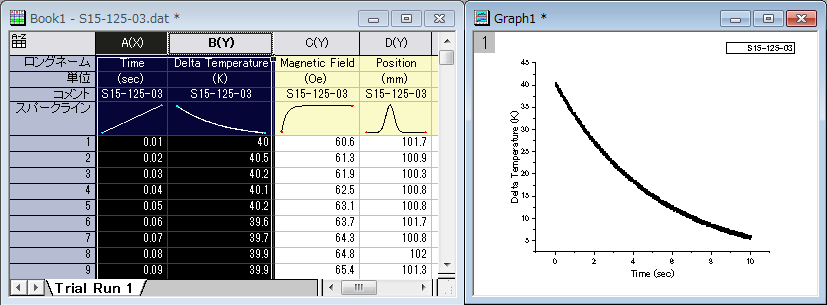
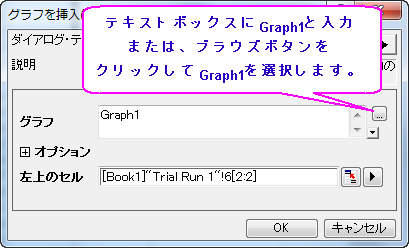
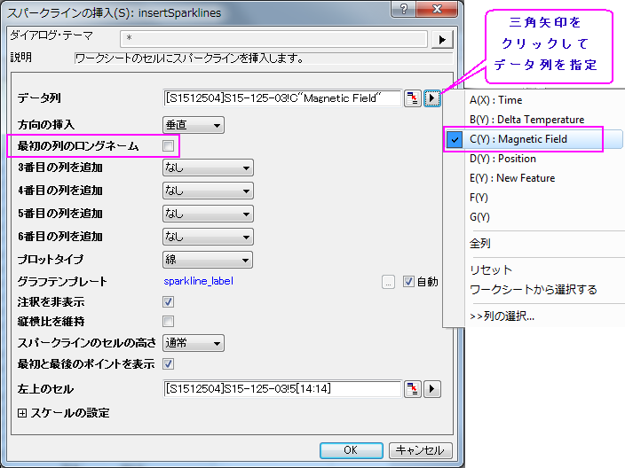
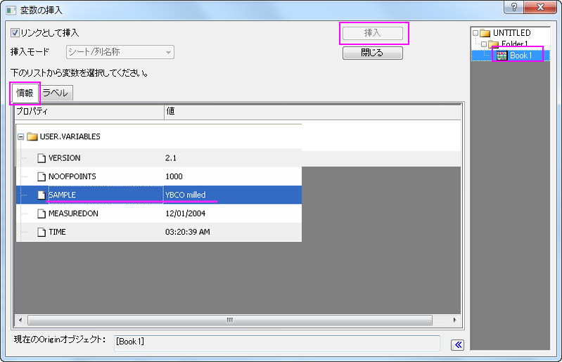
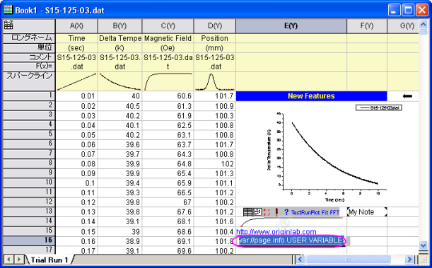

ワークシートのヘッダ行とデータセルには、埋め込みオブジェクトや、リンクオブジェクト、フォーマットされたテキストを持つことができます。また、Excelのようにワークシート上にフローティンググラフを追加することもできます。
†Note: Origin 2018より、編集可能グラフ、リンク付き/なしのグラフ画像、ファイルからの画像、スパークラインを含むワークシートセルの上にマウスカーソルを移動すると、プレビューが表示されます。
上の操作でのグラフ、ノート、スパークラインは埋め込みオブジェクトのサンプルです（グラフの挿入は、埋め込みまたはリンクが可能）。埋め込みオブジェクトは、ダブルクリックして開き、そのオブジェクトを表示することができます。開いたウィンドウで編集を加えることもでき、閉じると埋め込まれたオブジェクトも更新されます。